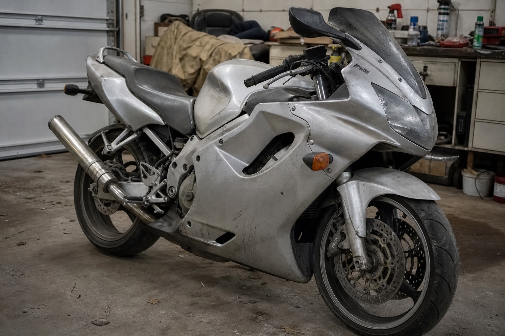
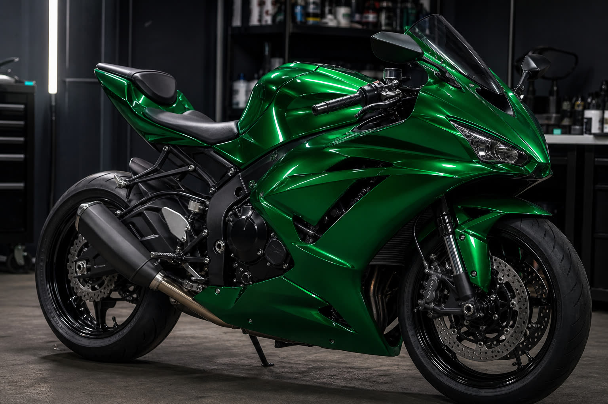
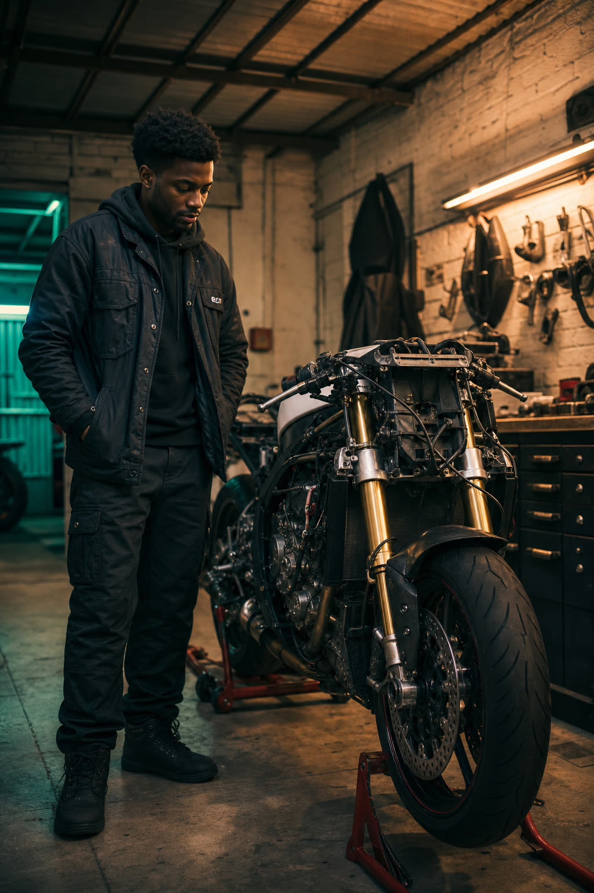
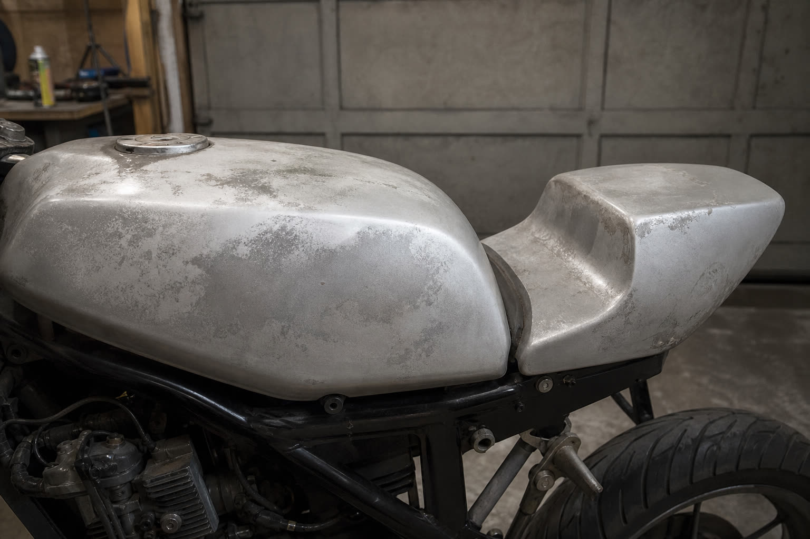
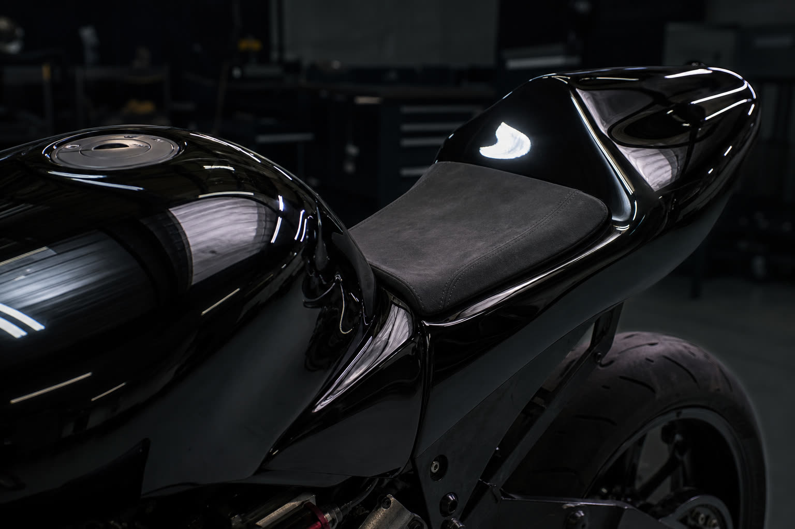
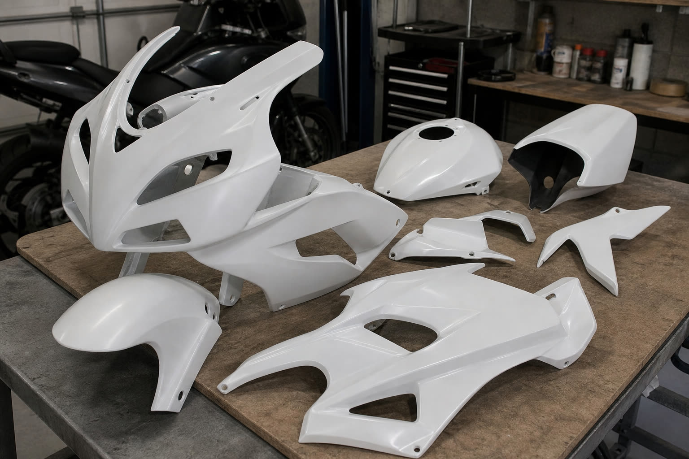
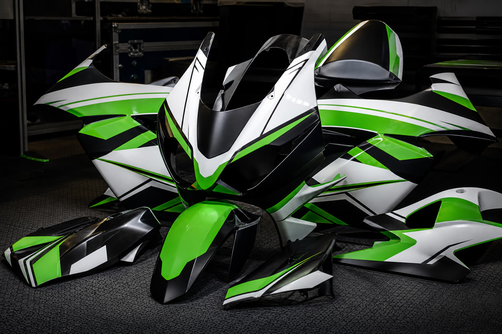

Before
AfterThe F4i · Metallic Green
Factory silver to deep metallic green over full fairing set.
Watch the build. Follow the wraps. Bring your bike next. One 2002 Honda CBR600 F4i, a garage, and a promise: build a life I don't need a vacation from.
A 2002 Honda CBR600 F4i. Faded fairings, high miles, and a lot of potential nobody else could see.
This project isn't a wrap shop that happens to post online. It's the opposite — a documentary about morning discipline, tearing down plastics, prepping panels, and laying vinyl until a tired bike looks like it means something again.
Every fairing swap, every squeegee pass, every reveal ride gets filmed. Not to sell you anything — because the process is worth watching. The wrap service grew out of people asking one question: "Can you do that to mine?"
— Chapter one is the F4i.

Garage · Day 001A repeatable ritual. It's what makes the channel a series and the studio a process — not a gamble.
Roll it in, walk it, photograph the honest before.
Every fairing, tank, tail and fender comes off.
Degrease, decontaminate, edge-map. Prep is the wrap.
Lay the skin. Heat, tuck, and post-heat every edge.
Reassemble, roll out, and film the photoshoot.
Real transformations from the F4i build log. More reveals drop with each episode.

Before
AfterFactory silver to deep metallic green over full fairing set.

Before
AfterScuffed OEM paint reset to a clean, deep gloss black.

Before
AfterBlank plastics turned into a full sponsor-style race livery.
Why motorcycle wraps
Your bike is the first thing that tells the world how you ride. A wrap makes that statement on purpose instead of by accident.
Sun-faded plastics and tired paint don't mean the bike is done. Vinyl gives an older machine a whole new chapter.
It's protection you can see. A finish you chose, applied by hand, that turns a commute into a moving piece of you.
Every panel, front to tail. The complete transformation, filmed end to end.
Upper, lowers, and mid panels reskinned for a full color change.
Accent a single piece — the fastest way to change a bike's whole mood.
Lids, hugger, levers, small trim. Detail work that ties a build together.
Your build filmed and edited for a future episode — cinematic BTS + reveal.
Tell me the bike and the vibe. I'll help you figure out the right package.
Start a requestI'm not an influencer.
I'm a builder who films the work.
I got into this the honest way — wanting the kind of freedom I saw pro skaters and creators build for themselves. So I learned to make things: software, then bikes, then video. The F4i became the first real chapter I could point to and say, "I made that better with my own hands."
No fake luxury, no hustle-bro noise. Just a garage, a process, and a plan to build a life I don't need a vacation from. If that resonates, follow along — and if you trust me with your bike, even better.
Tell me about your machine and where you want to take it. If it's a fit, we'll film the transformation and put your build on the channel.
Apply for a wrap